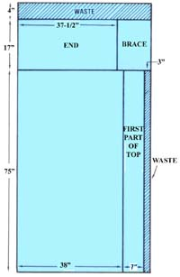
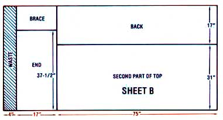
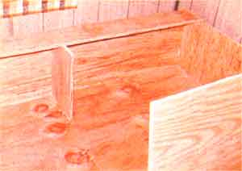
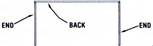

You can solve the problem of space in which to stash off-season and the like with...
Waste of any kind irritates me ... and I was long frustrated by my inability to make good use of the dusty, narrow space beneath my family's beds. Of course, there are ready-made "dresser beds" available, but I found the prices to be just too high. And though I went so far as to hunt up a number of plans for do-it-yourself storage sleepers, it seemed that those sets of instructions were more confusing-and potentially time-consuming-than I'd hoped.
Finally, I decided to take the situation (and a hammer) in hand ... and design and build my oldest son a storage bed, from scratch! To my surprise, the project turned out to be downright easy. For an investment of $22 worth of plywood, a bottle of white glue, and some finishing nails, I was able to build a simple (some would even say crude) but functional piece of furniture.
By following the cutting and assembly instructions below, you too can transform some under-bed space-which is probably not being used for anything other than breeding dust balls-into a valuable storage area!
SHEET A
[ 1] Cut the 4" waste strip from one end. (Always measure and cut one piece at a time to allow for "kerf" which is the wood removed by the saw blade.)
[2] Cut the 17"-wide piece that'll form one end and onebrace.
[3] Rip the 3" waste strip from one side of the remaining panel.
[4] Rip the 7"-wide top piece from the remaining board.
[5] Cut the end piece to 37-1/2" long . . . leaving the 17" brace.
SHEET B
[1] Repeat the first two steps taken in cutting Sheet A.
[2] Rip the 17"-wide back piece, leaving the 31"-wide top.
[3] Cut the end piece to 37-1/2" . . . leaving the second 17" brace.
[1] Glue and nail both end pieces to the back . . . as shown in the illustration.
[2] Fasten-again using both glue and nails-the bottom to the assembly.
[3] Turn the bed-to-be over.
[4] Glue and nail the narrow top piece to the back (as in the construction photo).
[5] Again referring to the photo, install the first brace.
[6] Using glue and nails, secure the large top piece to the ends (you can also run a bead of glue along the joint between the two top sections).
[7] Fasten the second brace. (I glued and nailed its top edge in place, but - not wanting to turn the bed over - I shored up its foot with the pieces of scrap shown in the photo of the finished sleeper.)
[8] Guess what . . . you've built a finished storage bed! Put a mattress or foam pad on top and fill the new "cupboard" with about 30 cubic feet of whatever you'd like to get out from under foot!
|
 |
 |
 |
|
 |
|
|